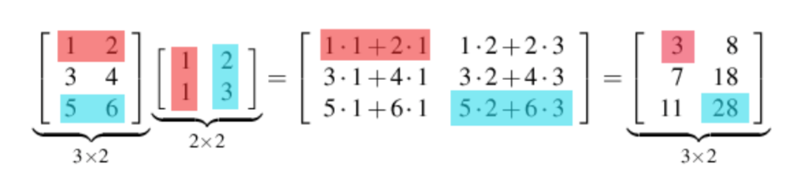

11. Inngangur að línulegri algebru
Nauðsynleg undirstaða
Pippin: I didn’t think it would end this way.
Gandalf: End? No, the journey doesn’t end here. Death is just another path, one that we all must take. The grey rain-curtain of this world rolls back, and all turns to silver glass, and then you see it.
Pippin: What? Gandalf? See what?
Gandalf: White shores, and beyond, a far green country under a swift sunrise.
Pippin: Well, that isn’t so bad.
Gandalf: No. No, it isn’t.
– Gandalf and Pippin, Return of the King (movie)
11.1. Fylki
Fylki (e. matrix) er tafla af tölum. Tölurnar nefnast stök (e. elements) fylkisins. Dæmi um fylki er \(2 \times 2\) fylkið með 2 dálkum og 2 röðum:
Við notum oft vísinn (e. index) \(i\) til að tákna röð fylkisins og \(j\) til að tákna dálk fylkisins. Við vísum fyrst í röð fylkis og svo dálk.
Fylki má almennt rita sem:
Þetta fylki hefur \(m\) raðir og \(n\) dálka og er kallað \(m \times n\) fylki. Til að vísa í stakið í röð \(i\) og dálki \(j\) fylkisins \(\mathbf{A}\) skrifum við \((\mathbf{A})_{ij}=a_{ij}\).
Algengur flokkur fylkja er fylki með jafnmarga dálka og raðir, þ.e. \(m=n\). Slík fylki kallast ferningsfylki (e. square matrix).
Hornalína fylkisins \(a_{11}, \dots ,a_{nn}\) kallast hornalínustök.
11.1.1. Dæmi: Nokkur dæmi um fylki
Dæmi
\(\begin{bmatrix} 1 & 2\\ 0 & 5 \end{bmatrix}\)
\(\begin{bmatrix} 1\\ 3\\ \end{bmatrix}\)
\([1,2,3,4]\)
\([2]\)
Hornalínufylki (e. diagonal matrix) eru ferningsfylki þar sem stökin fyrir utan hornalínuna (e. diagonal) eru núll. Hornalínustökin geta verið núll.
Þríhyrningsfylki (e. triangular matrix) er tegund af ferningsfylki þar sem stökin fyrir ofan eða neðan hornalínuna hafa gildið núll.
11.1.2. Dæmi: Hornalínufylki
Dæmi
Eftirfarandi fylki eru dæmi um hornalínufylki.
\(\begin{bmatrix} 1 & 0 & 0\\ 0 & 5 & 0\\ 0 & 0 & 3 \end{bmatrix}\)
\(\begin{bmatrix} 5 & 0 & 0\\ 0 & 0 & 0\\ 0 & 0 & 7 \end{bmatrix}\)
11.1.3. Dæmi: Þríhyrningsfylki
Dæmi
Eftirfarandi fylki eru dæmi um þríhyrningsfylki.
\(\begin{bmatrix} 1 & 2 & 3\\ 0 & 5 & 7\\ 0 & 0 & 7 \end{bmatrix}\)
\(\begin{bmatrix} 5 & 0 & 0\\ 3 & 1 & 0\\ 1 & 2 & 7 \end{bmatrix}\)
11.2. Samlagning og margföldun við fasta
11.2.1. Setning: Samlagning og margföldun við fasta
Setning
Tvö fylki \(\mathbf{A}\) og \(\mathbf{B}\) eru eins, þ.e. \(\mathbf{A}=\mathbf{B}\) þá og því aðeins að þau séu af sömu stærð og innihaldi sömu stök.
Ef \(\mathbf{A}\) og \(\mathbf{B}\) eru af sömu stærð má leggja þau saman: \(\mathbf{A}+\mathbf{B}=C\) þar sem stak \((i,j)\) í \(C\) er \(c_{ij} = a_{ij}+b_{ij}\).
Ef \(k\) er tala setjum við \(k\mathbf{A}=D\) þar sem \(d_{ij}=ka_{ij}\).
11.2.2. Dæmi: Samlagning og margföldun við fasta
Dæmi
Lítum á fylkin \(\mathbf{A}=\begin{bmatrix} 1 & 3\\ 2 & 4\\\end{bmatrix}\), \(\mathbf{B}=\begin{bmatrix} 5 & 7\\ 6 & 8\\\end{bmatrix}\) og \(\mathbf{C}=[1,2]\).
Reiknum
\(\mathbf{A}+\mathbf{B}\)
\(\mathbf{A}+\mathbf{C}\)
\(2\mathbf{A}\)
eða tiltökum hví það er ekki hægt.
Lausn
\(\mathbf{A}+\mathbf{C}\) er ekki hægt því fylkin eru ekki af sömu stærð.
11.3. Bylt fylki
Ef \(\mathbf{A}=(a_{ij})\) er fylki skilgreinum við bylta fylkið (e. matrix transpose) \(\mathbf{A}'\) (stundum \(\mathbf{A}^T\)) sem það fylki sem inniheldur stökin \(a_{ji}\), þ.e.a.s. stak í línu \(j\) og dálki \(i\) er tekið úr línu \(i\) og dálki \(j\) í upphaflega fylkinu.
11.3.1. Dæmi: Bylt fylki
Dæmi
Látum
og
Finnum \(\mathbf{A}'\) og \(\mathbf{B}'\).
Lausn
Við víxlum öllum línum þannig þær verða dálkar og öllum dálkum þannig þeir verða raðir. Þá fæst
og
11.4. Margföldun fylkja
Ef \(\mathbf{A}\) er \(m \times r\) fylki og \(\mathbf{B}\) er \(r \times n\) fylki þá er \(\mathbf{A}\mathbf{B}\) fylki þar sem stak í röð \(i\) og dálki \(j\) er reiknað með því að para saman stökin í röð \(i\) í \(\mathbf{A}\) og dálki \(j\) í \(\mathbf{B}\).
Einfaldast er að hugsa margfeldi fylkja þannig að byrjað er á að taka fyrsta dálk í \(\mathbf{B}\) og leggja hann yfir fyrstu línuna í \(\mathbf{A}\) til að margfalda saman öll stökin og finna summu þeirra margfelda. Því næst er þessi dálkur færður niður, línu fyrir línu, til að mynda allan fyrsta dálkinn í útkomunni. Til að mynda næsta dálk er tekinn næsti dálkur úr \(\mathbf{B}\) og aðgerðirnar endurteknar.
{kind=link}

Takið svo eftir að til að \(\mathbf{A}\mathbf{B}\) sé skilgreint þarf fjöldi dálka í \(\mathbf{A}\) að vera jafn fjölda raða í \(\mathbf{B}\)
11.5. Eiginleikar fylkja
Hér munum við skoða ýmsa stærðfræðilega eiginleika fylka.
11.5.1. Setning: Reiknireglur fyrir fylki
Reiknireglur fyrir fylki
Látum \(\mathbf{A}\), \(\mathbf{B}\) og \(\mathbf{C}\) vera fylki þannig að unnt sé að framkvæma aðgerðirnar í hverju tilviki og \(a,b,c\) vera tölur:
\(\mathbf{A} + \mathbf{B} = \mathbf{B} + \mathbf{A}\)
\(\mathbf{A} + (\mathbf{B} + \mathbf{C}) = (\mathbf{A} + \mathbf{B}) + \mathbf{C}\)
\(\mathbf{A}(\mathbf{B}\mathbf{C})=(\mathbf{A}\mathbf{B})\mathbf{C}\)
\(\mathbf{A}(\mathbf{B} + \mathbf{C}) = \mathbf{A}\mathbf{B} + \mathbf{A}\mathbf{C}\)
\(c(\mathbf{A}+\mathbf{B})=c\mathbf{A} + c\mathbf{B}\)
\(c(\mathbf{A}\mathbf{B}) = (c\mathbf{A})\mathbf{B} = \mathbf{A}(c\mathbf{B})\)
\(a(b\mathbf{C}) = (ab)\mathbf{C}\)
Það gilda því margar helstu reikniaðgerðir fyrir fylki, miðað við þá skilgreiningu á fylkjaaðgerðum sem hefur verið sett fram.
Víxregla gildir ekki almennt fyrir fylki, þ.e. \(\mathbf{A}\mathbf{B}\) er yfirleitt ekki það sama og \(\mathbf{B}\mathbf{A}\)! Raunar er algengt að einungis annað margfeldið sé skilgreint.
11.6. Einingafylki
Einingafylki (e. identity matrix) eru sérlega áhugaverð fylki. Þau hafa jafnmarga línur og dálka, hafa einn á hornalínunni en núll utan hennar:
Þessi fylki eru þannig að ef \(\mathbf{I}_n\) er \(n \times n\) einingafylki og \(\mathbf{A}\) er \(m \times n\) fylki þá gildir að \(\mathbf{A}\mathbf{I}_n = \mathbf{A}\). Einnig gildir að \(\mathbf{I}_m \mathbf{A} = \mathbf{A}\).
11.7. Andhverfa fylkis
Þegar \(x \neq 0\) er tala vitum við að unnt er að finna \(y\) þannig að \(xy=1\). Þetta er gert með því að setja \(x=1/x=x^{-1}\). Slíkt \(y\) er stundum nefnt margföldunarandhverfa \(x\).
Fyrir fylki höfum við skilgreint samlagningu og margföldun, en ekkert deilingarhugtak er komið. Deiling á ekki að vera neitt annað en margföldun með margföldunarandhverfu.
Til að setja fram slíkt hugtak byrjum við á almennri skilgreiningu.
11.7.1. Skilgreining: Fylkjaandhverfa
Skilgreining
Ef \(\mathbf{A}\) er \(n \times n\) fylki og \(\mathbf{B}\) er jafnstórt fylki sem er þannig að \(\mathbf{A}\mathbf{B}=\mathbf{B}\mathbf{A}=\mathbf{I}\), þá er \(\mathbf{B}\) nefnt andhverfa (e. inverse) \(\mathbf{A}\) og er táknað \(\mathbf{A}^{-1}\).
11.7.2. Dæmi: Fylkjaandhverfa
Dæmi
Ef \(\mathbf{H}\) er fylkið
og \(\mathbf{J}\) er fylkið
þá er einfalt að sýna fram á að \(\mathbf{H}\mathbf{J} = \mathbf{J}\mathbf{H} = \mathbf{I}\) svo \(\mathbf{J}\) er andhverfa \(\mathbf{H}\), þ.e. \(\mathbf{J}=\mathbf{H}^{-1}\).
Andhverfur fylkja eru almennt ekki reiknaðar í höndunum, en þó má reikna andhverfu \(2 \times 2\) fylkja á einfaldan hátt í höndunum.
11.7.3. Setning: Andhverfa \(2 \times 2\) fylkis
Setning
Höfum almennt \(2 \times 2\) fylki
Andhverfa fylkisins er
11.8. Línuleg jöfnuhneppi
Jafna af taginu
kallast línuleg jafna (e. linear equation). Það sem auðkennir línulegar jöfnur er að breyturnar koma bara fyrir í 1. veldi og engin margfeldi tveggja eða fleiri breyta koma fyrir í jöfnunni.
Línulega jöfnu eins og hér að ofan má líka rita sem \(\mathbf{a}\cdot \mathbf{x} = b\) þar sem \(\mathbf{a} = (a_1, a_2, \dots, a_n)\) og \(\mathbf{x} = (x_1, x_2, \dots, x_n)\).
Línulegt jöfnuhneppi (e. system of linear equations) samanstendur af einni eða fleiri línulegum jöfnum og er oft sett upp á forminu
Lausn jöfnuhneppisins er vigur \((x_1, x_2, \dots, x_n)\) þannig að allar jöfnurnar í jöfnuhneppinu eru uppfylltar. Það að leysa línulegt jöfnuhneppi felst í því að finna öll möguleg gildi á vigrinum \((x_1, x_2, \dots, x_n)\).
Stuðlafylki jöfnuhneppisins er fylkið
Breytuvigur jöfnuhneppisins er dálkvigurinn (e. column vector)
Hægri hlið jöfnuhneppisins er dálkvigurinn
Ef \(\mathbf{A}\) er stuðlafylki jöfnuhneppis, \(\mathbf{x}\) er breytuvigurinn og \(\mathbf{b}\) er hægri hliðin, þá samsvarar upphaflega jöfnuhneppið fylkjajöfnunni \(\mathbf{A}\mathbf{x} = \mathbf{b}\) eða
Upphaflega jöfnuhneppið og jafnan \(\mathbf{A}\mathbf{x} = \mathbf{b}\) hafa sömu lausnir.
Við lítum svo á að línulegt jöfnuhneppi og fylkjajafnan \(\mathbf{A}\mathbf{x} = \mathbf{b}\) séu jafngildar framsetningar á sama hlutnum.
Við kunnum að leysa jöfnuhneppi með því að leysa út eina breytu í einu. Gerum ráð fyrir að fylkið \(\mathbf{A}\) hafi andhverfu. Þá er hægt að leysa jöfnuhneppið \(\mathbf{A}\mathbf{x} = \mathbf{b}\) af því að
11.9. Ákveða fylkis
Ákveða (e. determinant) fylkis er vörpun sem varpar \(n \times n\) fylki yfir í rauntölu. Ákveða fylkis \(\mathbf{A}\) er táknuð með \(det(\mathbf{A})\).
Höfum almennt \(2 \times 2\) fylki,
Ákveða fylkisins er
Ekki er hlaupið að því að reikna ákveður fylkja þar sem \(n>2\) og gerum við það ekki í höndunum. Þó er auðvelt að finna ákveður þríhyrningsfylkja.
11.9.1. Setning: Ákveða þríhyrningsfylkis
Setning
Ef \(\mathbf{A}\) er \(n \times n\) þríhyrningsfylki fæst ákveða fylkisins með því að margfalda hornalínustök fylkisins, þ.e.
11.10. Eiginleikar ákveðu
Eftirfarandi jafngildi getur komið að góðum notum í útreikningum með fylkjum.
Eiginleikar ákveðu
Ef \(\mathbf{A}\) er \(n \times n\) fylki er eftirfarandi jafngilt:
\(det(\mathbf{A}) \neq 0\)
\(\mathbf{A}\) hefur andhverfu
\(\mathbf{Ax}=\mathbf{b}\) hefur nákvæmlega eina lausn
Þetta segir okkur að \(det(\mathbf{A}) \neq 0\) gildir þá og því aðeins að \(\mathbf{A}\) hafi andhverfu sem aftur gildir þá og því að eins að \(\mathbf{Ax}= \mathbf{b}\).